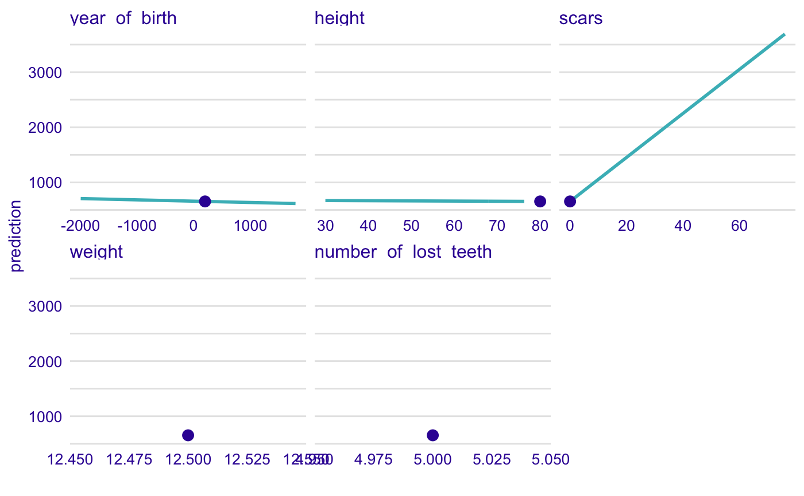
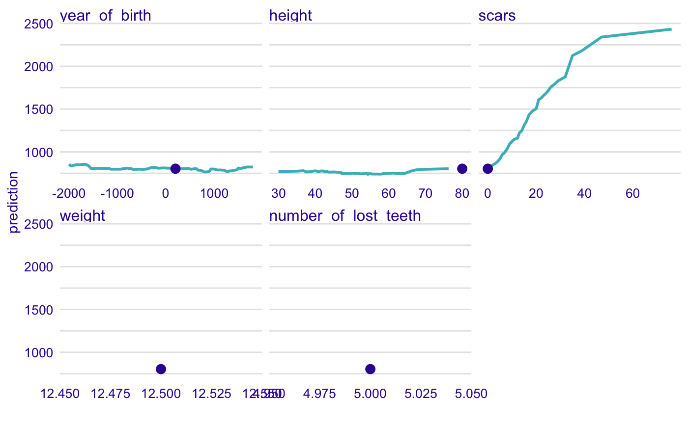

R/individual_profile.R
individual_profile.RdFrom DALEX version 1.0 this function calls the ceteris_paribus from the ingredients package.
Find information how to use this function here: https://pbiecek.github.io/ema/ceterisParibus.html.
individual_profile(explainer, new_observation, variables = NULL, ...)
| explainer | a model to be explained, preprocessed by the 'explain' function |
|---|---|
| new_observation | a new observarvation for which predictions need to be explained |
| variables | character - names of variables to be explained |
| ... | other parameters |
An object of the class 'ceteris_paribus_explainer'. It's a data frame with calculated average response.
Explanatory Model Analysis. Explore, Explain and Examine Predictive Models. https://pbiecek.github.io/ema/
new_dragon <- data.frame(year_of_birth = 200, height = 80, weight = 12.5, scars = 0, number_of_lost_teeth = 5) dragon_lm_model4 <- lm(life_length ~ year_of_birth + height + weight + scars + number_of_lost_teeth, data = dragons) dragon_lm_explainer4 <- explain(dragon_lm_model4, data = dragons, y = dragons$year_of_birth, label = "model_4v")#> Preparation of a new explainer is initiated #> -> model label : model_4v #> -> data : 2000 rows 8 cols #> -> target variable : 2000 values #> -> model_info : package stats , ver. 3.6.1 , task regression ( default ) #> -> predict function : yhat.lm will be used ( default ) #> -> predicted values : numerical, min = 541.1056 , mean = 1370.986 , max = 3928.189 #> -> residual function : difference between y and yhat ( default ) #> -> residuals : numerical, min = -5421.316 , mean = -1450.523 , max = 1176.912 #> A new explainer has been created!dragon_lm_predict4 <- individual_profile(dragon_lm_explainer4, new_observation = new_dragon, variables = c("year_of_birth", "height", "scars")) head(dragon_lm_predict4)#> Top profiles : #> year_of_birth height weight scars number_of_lost_teeth _yhat_ #> 1 -1999.00 80 12.5 0 5 706.2869 #> 1.1 -1962.02 80 12.5 0 5 705.4087 #> 1.2 -1927.02 80 12.5 0 5 704.5775 #> 1.3 -1859.54 80 12.5 0 5 702.9749 #> 1.4 -1812.00 80 12.5 0 5 701.8459 #> 1.5 -1780.00 80 12.5 0 5 701.0859 #> _vname_ _ids_ _label_ #> 1 year_of_birth 1 model_4v #> 1.1 year_of_birth 1 model_4v #> 1.2 year_of_birth 1 model_4v #> 1.3 year_of_birth 1 model_4v #> 1.4 year_of_birth 1 model_4v #> 1.5 year_of_birth 1 model_4v #> #> #> Top observations: #> year_of_birth height weight scars number_of_lost_teeth _yhat_ _label_ #> 1 200 80 12.5 0 5 654.0636 model_4v #> _ids_ #> 1 1plot(dragon_lm_predict4)# \dontrun{ library("ranger") dragon_ranger_model4 <- ranger(life_length ~ year_of_birth + height + weight + scars + number_of_lost_teeth, data = dragons, num.trees = 50) dragon_ranger_explainer4 <- explain(dragon_ranger_model4, data = dragons, y = dragons$year_of_birth, label = "model_ranger")#> Preparation of a new explainer is initiated #> -> model label : model_ranger #> -> data : 2000 rows 8 cols #> -> target variable : 2000 values #> -> model_info : package ranger , ver. 0.11.2 , task regression ( default ) #> -> predict function : yhat.ranger will be used ( default ) #> -> predicted values : numerical, min = 583.916 , mean = 1370.182 , max = 3419.427 #> -> residual function : difference between y and yhat ( default ) #> -> residuals : numerical, min = -4931.631 , mean = -1449.72 , max = 1048.614 #> A new explainer has been created!dragon_ranger_predict4 <- individual_profile(dragon_ranger_explainer4, new_observation = new_dragon, variables = c("year_of_birth", "height", "scars")) head(dragon_ranger_predict4)#> Top profiles : #> year_of_birth height weight scars number_of_lost_teeth _yhat_ #> 1 -1999.00 80 12.5 0 5 856.5259 #> 1.1 -1962.02 80 12.5 0 5 836.1662 #> 1.2 -1927.02 80 12.5 0 5 837.5196 #> 1.3 -1859.54 80 12.5 0 5 850.3278 #> 1.4 -1812.00 80 12.5 0 5 850.3278 #> 1.5 -1780.00 80 12.5 0 5 850.3278 #> _vname_ _ids_ _label_ #> 1 year_of_birth 1 model_ranger #> 1.1 year_of_birth 1 model_ranger #> 1.2 year_of_birth 1 model_ranger #> 1.3 year_of_birth 1 model_ranger #> 1.4 year_of_birth 1 model_ranger #> 1.5 year_of_birth 1 model_ranger #> #> #> Top observations: #> year_of_birth height weight scars number_of_lost_teeth _yhat_ _label_ #> 1 200 80 12.5 0 5 803.555 model_ranger #> _ids_ #> 1 1plot(dragon_ranger_predict4)# }